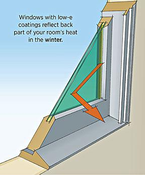
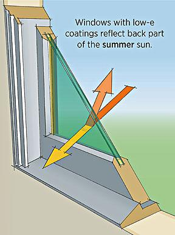

Energy-efficient windows provide space heating and lighting to this sunny kitchen. | Photo courtesy of Emily Minton-Redfield for Jim Logan Architects.
Windows provide our homes with light, warmth, and ventilation, but they can also negatively impact a home's energy efficiency. You can reduce energy costs by installing energy-efficient windows in your home. If your budget is tight, energy efficiency improvements to existing windows can also help.
Improving the Energy Efficiency of Existing Windows
You can improve the energy efficiency of existing windows by adding storm windows, caulking and weatherstripping, and using window treatments or coverings.
Adding storm windows can reduce air leakage and improve comfort. Caulking and weatherstripping can reduce air leakage around windows. Use caulk for stationary cracks, gaps, or joints less than one-quarter-inch wide, and weatherstripping for building components that move, such as doors and operable windows. Window treatments or coverings can reduce heat loss in the winter and heat gain in the summer. Most window treatments, however, aren't effective at reducing air leakage or infiltration.
Cold Weather Window Tips

- Use a heavy-duty, clear plastic sheet on a frame or tape clear plastic film to the inside of your window frames to reduce drafts.
- Install tight-fitting, insulating window shades on windows that feel drafty after weatherizing.
- Close your curtains and shades at night to protect against cold drafts; open them during the day to let in warming sunlight.
- Install exterior or interior storm windows, which can reduce heat loss through the windows by approximately 10%-20%, depending on the type of window already installed in the home. They should have weatherstripping at all movable joints; be made of strong, durable materials; and have interlocking or overlapping joints.
- Repair and weatherize your current storm windows, if necessary.
Warm Weather Window Tips

- Install white window shades, drapes, or blinds to reflect heat away from the house.
- Close curtains on south- and west-facing windows during the day.
- Install awnings on south- and west-facing windows.
- Apply sun-control or other reflective films on south-facing windows to reduce solar heat gain.
Selecting New Energy-Efficient Windows
If your home has very old and/or inefficient windows, it might be more cost-effective to replace them than to try to improve their energy efficiency. New, energy-efficient windows eventually pay for themselves through lower heating and cooling costs, and sometimes even lighting costs.
When properly selected and installed, energy-efficient windows can help minimize your heating, cooling, and lighting costs. Improving window performance in your home involves design, selection, and installation.
Design
Before selecting new windows for your home, determine what types of windows will work best and where to improve your home's energy efficiency. It's a good idea to understand the energy performance ratings of windows so you’ll know what energy performance ratings you need for your windows based on your climate and the home's design.
For labeling energy-efficient windows, ENERGY STAR® has established minimum energy performance rating criteria by climate. However, these criteria don't account for a home's design, such as window orientation.
Windows are an important element in passive solar home design, which uses solar energy at the site to provide heating, cooling, and lighting for a house. Passive solar design strategies vary by building location and regional climate, but the basic window guidelines remain the same—select, orient, and size glass to maximize solar heat gain in winter and minimize it in summer.
In heating-dominated climates, major glazing areas should generally face south to collect solar heat during the winter when the sun is low in the sky. In the summer, when the sun is high overhead, overhangs or other shading devices prevent excessive heat gain.
To be effective, south-facing windows should have a solar heat gain coefficient (SHGC) of greater than 0.6 to maximize solar heat gain during the winter, a U-factor of 0.35 or less to reduce conductive heat transfer, and a high visible transmittance (VT) for good visible light transfer. See Energy Performance Ratings to learn more about these ratings.
Windows on east-, west-, and north-facing walls should be minimized while still allowing for adequate daylight. It is difficult to control heat and light through east- and west-facing windows when the sun is low in the sky, and these windows should have a low SHGC and/or be shaded. North-facing windows collect little solar heat, so they are used only for lighting. Low-emissivity (low-e) window glazing can help control solar heat gain and loss in heating climates.
In cooling climates, particularly effective strategies include preferential use of north-facing windows and generously shaded south-facing windows. Windows with low SHGCs are more effective at reducing cooling loads.
Some types of glazing help reduce solar heat gain, lowering a window's SHGC. Low-e coatings—microscopically thin, virtually invisible metal or metallic oxide layers deposited directly on the surface of glass—control heat transfer through windows with insulated glazing. Tinted glass absorbs a large fraction of incoming solar radiation through a window, reflective coatings reduce the transmission of solar radiation, and spectrally selective coatings filter out 40% to 70% of the heat normally transmitted through insulated window glass or glazing, while allowing the full amount of light to be transmitted. Except for spectrally selective, these types of glazing also lower a window's VT. See Window Types to learn more about glazing, coatings, tints, and other options when selecting efficient windows.
If you're constructing a new home or doing some major remodeling, you should also take advantage of the opportunity to incorporate your window design and selection as an integral part of your whole-house design—an approach for building an energy-efficient home.
Selection
You'll find that you have several options to consider when selecting what type of windows you should use in your home.
When selecting windows for energy efficiency, it's important to first consider their energy performance ratings in relation to your climate and your home's design. This will help narrow your selection. Select windows with both low U-factors and low SHGCs to maximize energy savings in temperate climates with both cold and hot seasons. Look for whole-unit U-factors and SHGCs, rather than center-of-glass (COG) U-factors and SHGCs. Whole-unit numbers more accurately reflect the energy performance of the entire product.
![Illustration showing a cross-section of a window, with parts labeled. Double-paned glass is shown to have a low-e and/or solar control coating, a gas fill between the double panes, and a spacer at the base of the window between the panes. On the interior of the house is a strip of wood at the bottom edge of the window labeled the stop, and just in front of it is a step-like shelf labeled the stool. Beneath the stool and on top of a two by four is a thin pipe labeled the backer rod. On the exterior of the house, the illustration shows the frame of the window labeled the sash, and the shelf in front of the window labeled the sill. Weatherstripping is shown to be between the sill and sash. Beneath the sash, vertical against the house, is a strip of wood called the apron or flange, and the jamb is on the end of the sill.](../sites/prod/files/styles/large/public/window_technologies.gif@itok=jTRyvzAI)
A window's energy efficiency is dependent upon all of its components. Window frames conduct heat, contributing to a window's overall energy efficiency, particularly its U-factor. Glazing or glass technologies have become very sophisticated, and designers often specify different types of glazing or glass for different windows, based on orientation, climate, building design, etc.
Another important consideration is how the windows operate, because some operating types have lower air leakage rates than others, which will improve your home's energy efficiency. Traditional operating types include:
- Awning. Hinged at the top and open outward. Because the sash closes by pressing against the frame, they generally have lower air leakage rates than sliding windows.
- Casement. Hinged at the sides. Like awning windows, they generally have lower air leakage rates than sliding windows because the sash closes by pressing against the frame.
- Fixed. Fixed panes that don't open. When installed properly they're airtight, but are not suitable in places where window ventilation is desired.
- Hopper. Hinged at the bottom and open inward. Like both awning and casement, they generally have lower air leakage rates because the sash closes by pressing against the frame.
- Single- and double-hung. Both sashes slide vertically in a double-hung window. Only the bottom sash slides upward in a single-hung window. These sliding windows generally have higher air leakage rates than projecting or hinged windows.
- Single- and double-sliding. Both sashes slide horizontally in a double-sliding window. Only one sash slides in a single-sliding window. Like single- and double-hung windows, they generally have higher air leakage rates than projecting or hinged windows.

Installation
Even the most energy-efficient window must be properly installed to ensure energy efficiency. Therefore, it's best to have a professional install your windows.
Window installation varies depending on the type of window, the construction of the house (wood, masonry, etc.), the exterior cladding (wood siding, stucco, brick, etc.), and the type (if any) of weather-restrictive barrier.
Windows should be installed according to the manufacturer’s recommendations and be properly air sealed during installation to perform correctly. To air seal the window, caulk the frame and weatherstrip the operable components.
Learn More
Links
- ENERGY STAR Residential Windows, Doors and Skylights
- Product Ratings - National Fenestration Rating Council
- Climate Zone Recommendations
- Windows and Daylighting - Lawrence Berkeley National Laboratory
- Window Selection Tool
- Window Technologies: Low-E Coatings